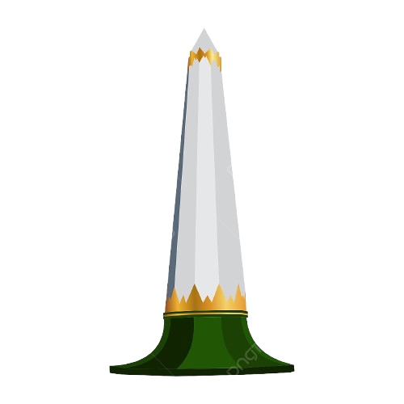

Tugu Pahlawan
Tugu Pahlawan is a historical monument that became a unique landmark for Surabaya. It is built to commemorate the events during Indonesia's battle of independence, specifically the 1945 Battle of Surabaya. It offers a 2-story museum underneath that anyone can visit.
